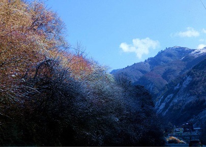

morly旅游网
卧龙之景，青山绿水，涛涛不绝
卧龙自然保护区位于四川省阿坝藏族、羌族自治州汶川县西南部，邛崃山脉东南坡，距四川省会成都130公里，交通便利。汶川特大地震后，香港特别行政区对口资助援建卧龙自然保护区。
卧龙自然保护区是国家级第三大自然保护区。四川省面积最大、自然条件最复杂、珍稀动植物最多的自然保护区。保护区横跨卧龙、耿达两乡，东西长52公里、南北宽62公里，总面积约70万公顷。主要保护西南高山林区自然生态系统及大熊猫等珍稀动物。
卧龙自然保护区位于四川盆地西缘，邛崃山脉东南坡，四川省阿坝藏族羌族自治州东南部，岷江上游汶川县映秀镇西侧，成都平原向青藏高原过度的高山深谷地带，东经102°52'─103°25'，北纬30°45'─31°25'，东西宽60公里，南北长63公里。东与汶川县映秀镇连接，西与宝兴、小金县接壤,南与大邑、芦山两县毗邻，北与理县及汶川县草坡乡为邻。
卧龙自然保护区始建于1963年，面积2万公顷，是中国最早建立的综合性国家级保护区之一。1974年3月面积扩大到20万公顷。1980年加入联合国教科文组织“人与生物圈”保护区网，并与世界野生生物基金会合作建立中国保护大熊猫研究中 心。1983年7月，省政府，原林业部联合作出了将四川省汶川县卧龙特别行政区改为四川省汶川卧龙特别行政区的决定，与卧龙自然保护区管理局合署办公的综合管理体制。
卧龙自然保护区的“中华大熊猫园”的规划设计，把生态资源、研究实践、拓展建设、长远发展结合起来，把就地取材、因势利导、顺应自然与生态建设结合起来。通过大熊猫野化驯养区、大熊猫产仔区、大熊猫野外放归过渡区、大熊猫野外放归试验区等互动一体的功能区的规划设计，成功的完成了“保护是前提，研究为中心，放归是目的”的指导思想。为提供更多更优化更合乎自然的物种研究大熊猫创造了更优秀的条件，使卧龙名符其实成为世界上最生态、最优秀、最先进、最前卫的保护、研究大熊猫的中心，进一步得到党和国家的领导人、世界野生生物基金会领导及有关专家、学者的瞩目和关心。
内容整理至网络，如有侵权，请联系我们！1255394075@qq.com